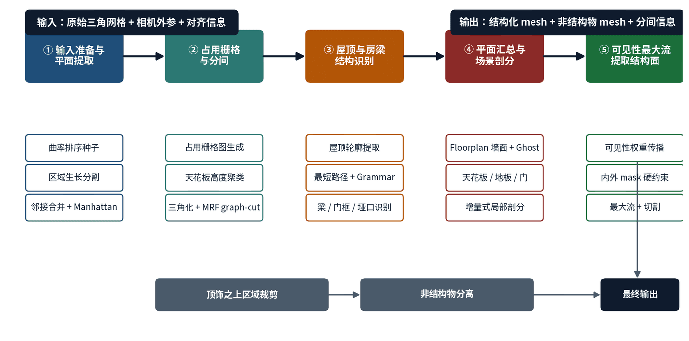
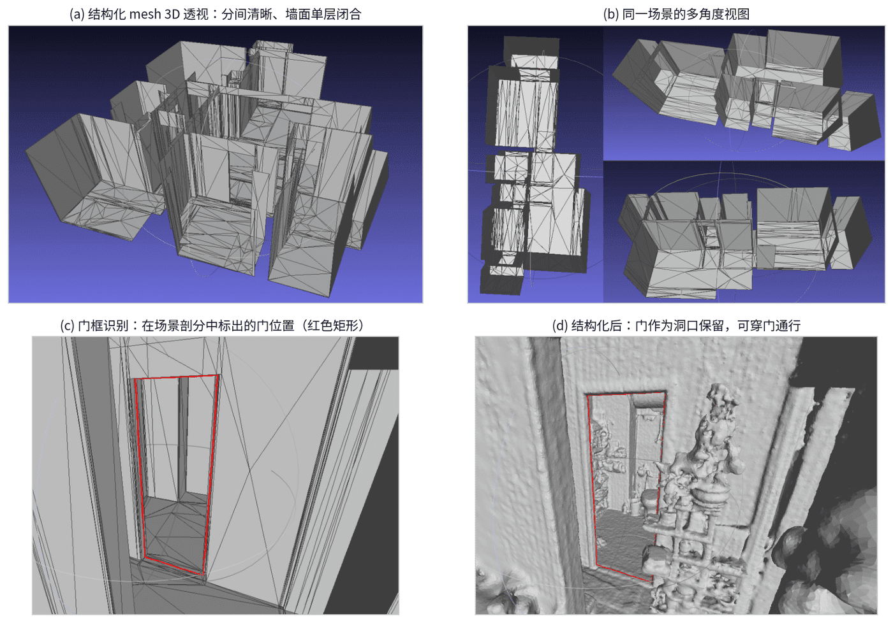

Recovering structural information from indoor meshes.
Indoor Structured Reconstruction
A geometry-first pipeline that takes an indoor mesh as input, infers room-level structural information, and reconstructs a regularized structural mesh for downstream floorplan, measurement, and visualization workflows.
Problem
Given a reconstructed indoor mesh, the goal is not only to clean geometry but to recover the underlying structural information: rooms, walls, openings, doors, and the inside/outside relationship of space. Raw indoor reconstruction meshes often contain layered walls, floating fragments, holes near corners, and furniture fused into structural surfaces; these artifacts make wall lines ambiguous and break downstream measurement, floorplan, editing, and visualization workflows.
Approach
- Extract candidate structural surfaces from the input mesh and use them to partition the indoor space into a cell complex.
- Use visibility evidence from the reconstructed mesh and scan observations to reason about free space, occupied space, and unknown regions.
- Formulate inside/outside labeling as a graph-cut optimization problem over cells, then reconstruct the structural mesh from the optimized cell labels.
- Recover higher-level structure such as room partitions and door openings from the resulting topology and geometric evidence.
My Contribution
I designed the complete algorithm framework and independently implemented the full system from scratch. The core idea is to convert an input mesh into a spatial cell complex, then solve the structural inside/outside labeling problem with visibility constraints and graph-cut optimization.
My main contributions included:
- End-to-end framework design for mesh-to-structure reconstruction
- Complex geometry implementation for cell-complex construction and maintenance
- Visibility-based inside/outside reasoning and graph-cut formulation
- Room partitioning and structural topology recovery
- Door recognition and opening extraction from geometric/topological cues
- Regularized structural mesh reconstruction from optimized cell labels
Outcome
Starting from an indoor mesh, the system successfully reconstructs structural information and outputs a regularized structural mesh, making the result more suitable for floorplan generation, measurement, editing, and VR visualization.

